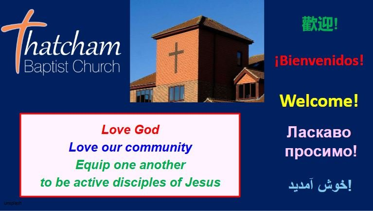

We'd love to meet you
Thinking about coming along? That takes a little courage — so here's everything you need to feel at ease before you even walk through the door. No surprises, we promise.
Relax — it's more normal than you think
Our morning service lasts around 1 hour 15 minutes. It's informal and modern — no robes, no ritual you won't understand, and no one will single you out.
- Come as you areJeans, smart, in-between — whatever's comfy. There's no dress code.
- A warm welcome team on the doorThey'll greet you, hand you anything you need and point you in the right direction.
- Sit wherever you likeNo reserved seats, no front-row pressure. Slip in at the back if you'd rather.
- A simple, familiar shapeSome notices, a few songs, a Bible reading and a talk. That's the heart of it.
- Tea, coffee & a chat afterwardsStay for a cuppa if you can — it's the best way to meet people. No pressure to linger.
- A hearing loop is availableJust ask the welcome team and they'll help you get set up.

Your kids are very welcome
Bring them along — we love the noise! Children start the morning with everyone, then head to their own age-appropriate groups with our trained, DBS-checked team.
Crèche
A safe, cosy space for babies and toddlers, with toys and helpers on hand. Parents welcome to stay.
JAM
For primary-age children up to Year 5 — Bible stories, games, craft and plenty of fun ("Jesus And Me").
6Up
For Year 6 to Year 9 — a space to ask questions, hang out and explore faith with others their age.
Easy to reach, easy to park
You'll find us on Wheelers Green Way — tucked behind Burdwood Surgery, just a short walk from Thatcham railway station.
Let us know you're coming
Prefer to break the ice before Sunday? Drop us a line and one of our team will be looking out for you. Tell us anything that would help — coming with kids, need step-free access, a question about faith. Nothing's too small.
Once you're part of the family, we stay connected through ChurchSuite — our online hub for groups, events, rotas and news.
“However you arrive, you'll leave known.”The TBC welcome